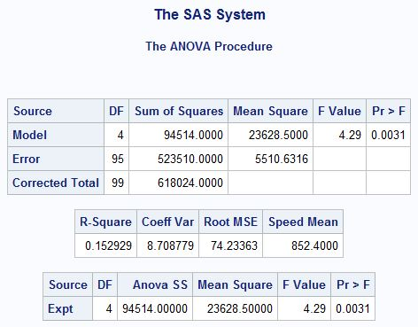
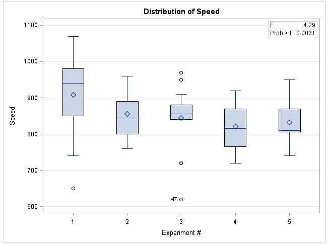
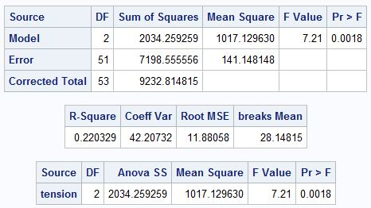
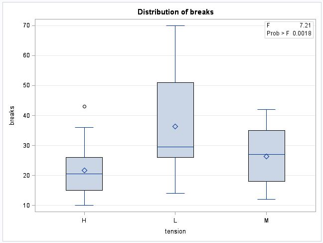
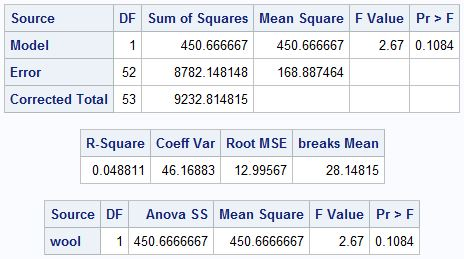
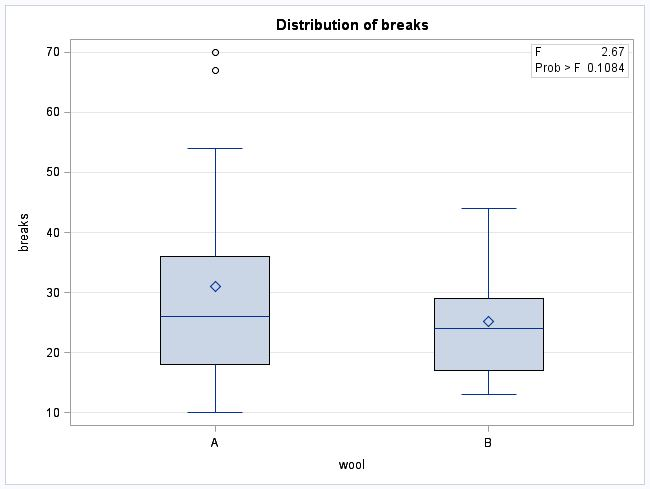

Using the morley and warpbreaks datasets, this lecture demonstrates how to conduct hypothesis testing in SAS through PROC ANOVA.
The primary difference between t-tests and ANOVA is the number of groups you can analyze. t-tests are limited to a comparison between two groups while ANOVA can compare multiple groups as well as interactions between groups. ANOVA uses the F distribution and is sometimes referred to as an F-test.
For a t-test you have a null that compares two means:
H0: μ1 = μ2
For ANOVA, you compare more than two means:
H0: μ1 = μ2 = μ3 = … = μn
where n = total number of groups
The ANOVA alternative hypothesis is usually not written in mathematical notation:
H1: at least one mean is different from the rest
The following outcomes would result in a rejection of the null in favor of the alternative:
As a refresher, the morley dataset contains measures of the speed of light from 5 experiments, each with 20 runs:
proc print data=mrrlib.morley(obs=25 drop=VAR1); run;We will test the hypothesis that all the means from the five experiments are the same. From a practical perspective, we could reword this as:
we are testing the hypothesis that the experimental design influenced the values of the speed of light
Formally, the null hypothesis is:
H0: μexpt1 = μexpt2 = μexpt3 = μexpt4 = μexpt5
And the alternative:
H1: at least one mean is different from the rest
ods graphics on;
proc anova data=mrrlib.morley;
class expt;
model speed = expt;
label expt = "Experiment #";
run;
ods graphics off;model statement specifies your target variable of interest as well as one or more effects you with to test
class statement label statement will convert instances of “expt” in the output to “Experiment #”

As a refresher, the warpbreak dataset contains data on the number of breaks in yarn per loom for 54 runs. Half the runs use Wool Type A and the other half use Wool Type B. For each wool type, three degrees of tension are applied–low, medium, and high.
proc print data=mrrlib.warpbreaks(obs=10 drop=VAR1); run;We will test the hypothesis that the number of breaks are the same for each wool type. We will also test the hypothesis that the number of breaks are the same for each tension type. We will test them independently.
Formally, the null hypotheses are:
H0: μA = μB
H0: μL = μM = μH
And the alternatives for both null hypotheses:
H1: at least one mean is different from the rest
ods graphics on;
proc anova data=mrrlib.warpbreaks;
class tension;
model breaks = tension;
run;
proc anova data=mrrlib.warpbreaks;
class wool;
model breaks = wool;
run;
proc ttest data=mrrlib.warpbreaks plots=none;
class wool;
var breaks;
run;
ods graphics off;



an F-test of two means is equivalent to a t-test
We want to test whether wool and tension have a significant effect on the number of breaks. This is a two-factor main effects model.
In a two-factor (or multi-factor) main effects model, you are testing the effects of two (or more) variables when considered together.
Let’s consider the difference for wool type in the simple effects model and the two-factor main effects model:
simple effects model: wool type affects the number of breaks
This simple effects model does not control for any other variable.
two-factor main effects model: wool type affects the number of breaks after controlling for tension
The two-factor main effects model tests the influence of wool on breaks at the average number of breaks for each tension type. This is the ceteris paribus (“all else held equal”) assumption. We can rephrase the hypothesis with this language:
two-factor main effects model: tension type held equal, wool type affects the number of breaks
NOTE: the “all else held equal” assumption also applies to the interpretation of regression coefficients.
Visualizing the grouping under the simple effects and two-factor model makes the difference more concrete.
Let’s start for the testing of main effect for wool:
ods graphics on;
proc sgplot data=mrrlib.warpbreaks;
vbox breaks / group=wool
groupdisplay=clustered;
title "wool only: simple effect";
run;
proc sgplot data=mrrlib.warpbreaks;
vbox breaks / category=tension
group=wool
groupdisplay=clustered;
title "wool & tension: wool main effect";
run;
ods graphics off;in the simple effects model, we test the difference in the mean # of breaks for wool type A (blue) and B (red)
in the simple effects model, we test the difference in the mean # of breaks for wool type A (blue) and B (red) at each level of tension
Now for the testing of main effect for tension:
ods graphics on;
proc sgplot data=mrrlib.warpbreaks;
vbox breaks / group=tension
groupdisplay=clustered;
title "tension only: simple effect";
run;
proc sgplot data=mrrlib.warpbreaks;
vbox breaks / category=wool
group=tension
groupdisplay=clustered;
title "wool & tension: tension main effect";
run;
ods graphics off;in the simple effects model, we test the difference in the mean # of breaks for tension L (blue), M (red), and H (green)
in the simple effects model, we test the difference in the mean # of breaks for tension L (blue), M (red), and H (green) for each wool type
proc anova data=mrrlib.warpbreaks;
class tension wool;
model breaks = tension wool;
run;In order to test the two-factor model, we include both variables in the class statement and on the right hand of the model.
It is reasonable to think that breaks are influenced by the interaction of wool type and tension. The wool types could have different properties that influence the number of breaks at various tensions. For example, low tension could result in the fewest breaks for wool type A, but it could result in the highest breaks for wool type B.
proc anova data=mrrlib.warpbreaks;
class tension wool;
model breaks = tension|wool;
run;To test the levels as well as the interaction between two variables, you can use the | symbol between the variables. Alternative, you could write the model statement as:
model breaks = tension wool tension*wool;
The results show us that:
Beware: R-square is a POOR measure of model comparison because:
R-square always increases with the inclusion of another factor
R-square does not penalize overfit
However, an increase in R-square of 0.10 from a single factor is a fairly significant amount of addition variance explained by a single factor.